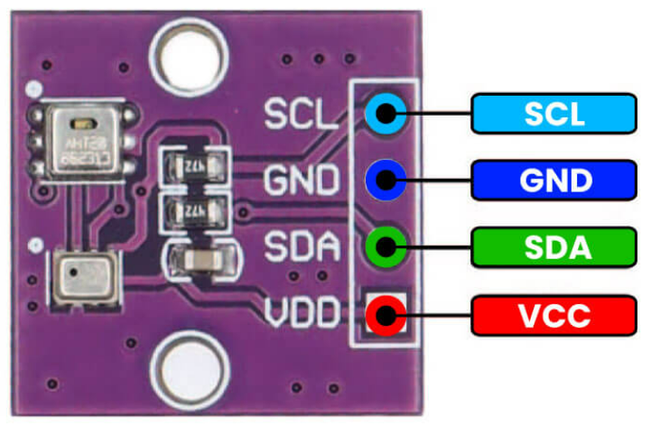

Project 6
Weather Station
By Sahil and Zicong
Overview
This next project is a culmination of all that you have learned in communication. You will transfer data between two ESP32 boards and several embedded devices using Wifi and I2C. The goal? Your system will be a full-fledged, wireless weather station. An outdoor ESP32 unit, connected to temperature, humidity, and light sensors, will transmit its data over radio to the indoor ESP32 unit, which will print this information on a display.
Installing Arduino Libraries
Here is a quick recap on how you can install Arduino libraries in the Arduino IDE 2.0.0+
- Download the library as a .zip
- In the Arduino IDE, go to Sketch → Include Library → Add .ZIP Library…
- Select the .zip of the library and click Open.

You're done! Just make sure to #include the library header
file so that your
code compiles correctly.
| AHT20 Library | Download |
| LiquidCrystal I2C Library | Download |
| WifiConfig Library | Download |
Concepts
AHT20 Sensor
We will use the AHT20 sensor module to measure temperature and humidity. This component is rather straightforward. The AHT20 uses the Inter-Integrated Circuit (I²C)® protocol to communicate with the ESP32 board over a single data line and clock line. We simply need to accept the data at the ESP32 and display it.
AHT20 Pinout

To the right is the pinout of the AHT20.
The GND and VCC pins power the sensor module. Note that the VCC pin takes a voltage between 3.3 and 5V, but to keep it simple,
connect it to the VCC pin of the ESP32 board.
SDA is the serial data pin corresponding to the data line.
SCL is the serial clock pin corresponding to the clock line.
At the rising clock edge of the clock line, a bit of data is sent to and/or from the controller (ESP32) and a peripheral
(AHT20 sensor) on the data line. These pins should be connected to digital pins on the ESP32 to facilitate I²C communication.
Using the AHT20 Library
Writing the code for the AHT20 is almost as easy as wiring it! You can download the library here. Make sure to include the header files:
#include <Adafruit_AHTX0.h>
At the core of this library is the Adafruit_AHTX0 class, which you will instantiate as an object and use to read data from the sensor.
Create an object as follows, declaring it in the global scope.
Adafruit_AHTX0 aht;
Then, initialize two sensors_event_t objects called humidity and temp. sensors_event_t is a structure defined in the Adafruit Library. sensors_event_t humidity, temp;
To start communication with the AHT20, call the
aht.begin() function.
aht.begin();
To collect data from the sensor, call the
getEvent() function from the aht object as follows.
aht.getEvent(&humidity, &temp);
By calling getEvent(), humidity and temp are updated with the latest sensor values.
You can now for example print these values to the serial monitor, just make sure in void setup() you have included serial.Begin(115200);.
Serial.print(humidity.relative_humidity);
Serial.print(temp.temperature);
Temperature is Celsius by default.
LCD with I2C Backpack
The Liquid Crystal Display or LCD is a classic piece of technology for displaying characters from a microcontroller board.
Our particular display has the dimensions 16x2, meaning it has 16 columns and 2 rows.
Traditionally, characters are transmitted from the board to the LCD in a parallel protocol, along with bits for other
features like backlighting and positioning. Instead, we’ll use an I2C backpack, which translates an I2C signal to parallel.
This reduces the mess of wiring over 10 pins to the ESP32 to just four.
I2C Backpack Pinout Diagram
Below is a pinout of the I2C backpack attached to the LCD. Focus on the four pins labeled on the backpack. You should recognize two pins as the SDA and SCL lines for I2C protocol.

It should also come as no surprise that the GND and VCC pins power the backpack and the LCD. Note that the VCC pin accepts 5V, so connect it to the 5V pin of the ESP32 board.
Wiring the ESP32 to the I2C Backpack
The ESP32 is designed to handle I2C communication through certain pins on the board, which connect to the backpack as follows.
| I2C Backpack Pins | ESP32 Pins |
|---|---|
| GND | GND |
| VCC | 5V |
| SDA | 8 |
| SCL | 10 |
Having trouble seeing the text on your LCD? Use a Phillips screwdriver to turn the potentiometer on the backpack. This will adjust the contrast of the LCD.
Using the LiquidCrystal I2C Library
Download the library here. Make sure to include the header file:
#include <LiquidCrystal_I2C.h>
To display text, you will instantiate an object of the LiquidCrystal_I2C class, declaring it in the
global scope. Note in the constructor the address
argument , which should be 0x27,
the default I2C address of the backpack. The remaining arguments should match the dimensions of the
LCD.
LiquidCrystal_I2C lcd(int address, int columns, int rows);
You will call lcd’s init() and backlight() functions just once to initialize the
display.
Place this code in your setup() function.
lcd.init();
lcd.backlight();
Now, you can print to the LCD as though you are in a text editor. You’ll have to move a “cursor”
with the lcd’s cursor() function.
Remember that the columns and rows are indexed starting from zero.
lcd.cursor(int column, int row);
Print characters using one of lcd’s following overloaded print() function. Remember that a string can be
represented by a string literal like “Hello World”.
Make sure to move the cursor as needed.
lcd.print(char[] string);
lcd.print(int num);
lcd.print(float num);
You can clear the LCD with the following function.
lcd.clear();
Let’s see all of the code in action!
Do not blindly copy-paste the sample code to your project deliverables. Read it, understand it, then adapt it to your own code.
#include <LiquidCrystal_I2C.h>
LiquidCrystal_I2C lcd(0x27, 16, 2);
void setup()
{
lcd.init(); // initialize the lcd
lcd.backlight();
}
void loop()
{
lcd.clear(); // clear display
lcd.setCursor(0, 0); // move cursor to (0, 0)
lcd.print("Hello"); // print message at (0, 0)
lcd.setCursor(2, 1); // move cursor to (2, 1)
lcd.print("World"); // print message at (2, 1)
delay(1000); // delay between each print to LCD
}WiFi
WiFi is the most popular choice for wireless communication between devices. It uses radio waves to “connect” devices, allowing them to communicate. While we won’t be using an actual WiFi network, we will use the ESP32’s communication protocol ESP-NOW, which uses the ESP32’s built-in WiFi module.
Here’s how we’ll transmit data: One ESP32’s WiFi module will wirelessly transmit messages to another ESP32’s WiFi module using the ESP-NOW protocol. We won’t dive into the details of how ESP-NOW works, but we will cover the concept of how radio waves are emitted.
Radio Frequency Bands and Channels
Remember that the WiFi modules send information over radio waves, just like our mobile phones, satellites, and WiFi. But how do the radio waves emitted by a satellite not interfere with the radio waves of a WiFi router or iPhone? Let’s explain: Each signal belongs to a frequency band or range of contiguous frequencies specified by the International Telecommunication Union (ITU).

WiFi exists in 2.4 GHz,5 GHz and 6 GHz bands. These bands are further divided into channels.
For example, 2.4 GHz WiFi 14 channels, each with a different radio frequency within the larger frequency band. FM radio stations are assigned to unique channels, which is why you normally don’t hear Taylor Swift overlaid with the latest stock market report. WiFi networks close together are assigned to different channels so they do not interfere with each other. For instance, if you and your next-door neighbor set your WiFi networks to the same channel, the networks would interfere, slowing down your internet speeds.
If multiple radio signals were to exist on the same frequency, a collision would occur. This is why the ITU takes special care to regulating the radio spectrum.
The ESP-NOW communication protocol operates on a 2.4 GHz frequency band, which it shares with many WiFi networks. However, ESP-NOW is not a WiFi network itself; it is a different wireless communication that uses an ESP32’s WiFi module to directly communicate with another ESP32. While WiFi uses an access point to establish a connection between two devices, ESP-NOW identifies another ESP32 board by its MAC address and uses the ESP32 WiFi module to directly transmit data to that receiver address.
Using the WiFi Library
Download the library
here .
Make sure to include the header file:
#include <WifiConfig.h>
You need to determine the MAC address of the receiver ESP32 board. Run this sketch code on your receiver ESP32. The serial monitor should show the MAC address as a series of hexadecimal numbers separated by colons.
Example address: 34:b7:da:f6:3e:78.
#include <Wifi.h>
#include <esp_wifi.h>
void readMacAddress(){
uint8_t baseMac[6];
esp_err_t ret = esp_wifi_get_mac(WIFI_IF_STA, baseMac);
if (ret == ESP_OK) {
Serial.printf("%02x:%02x:%02x:%02x:%02x:%02x\n",
baseMac[0], baseMac[1], baseMac[2],
baseMac[3], baseMac[4], baseMac[5]);
} else {
Serial.println("Failed to read MAC address");
}
}
void setup(){
Serial.begin(115200);
WiFi.mode(WIFI_STA);
WiFi.STA.begin();
Serial.print("[DEFAULT] ESP32 Board MAC Address: ");
readMacAddress();
}
void loop(){
Serial.print("[DEFAULT] ESP32 Board MAC Address: ");
readMacAddress();
}Next, create an array to store the receiver ESP32’s MAC address. Each hexadecimal number should be one entry in the array, with the prefix 0x to specify that the number is in hexadecimal. So for our example address 34:b7:da:f6:3e:78, we would initialize the array below:
uint8_t receiverAddress[] = {0x34, 0xB7, 0xDA, 0xF6, 0x3E, 0x78}
The next step is to put your ESP32 board in WiFi mode to prepare the onboard WiFi module for communication and start the ESP-NOW protocol. Place this code in your setup() function.
wifi_setup();
You will set the receiver ESP32 as the transmitting board’s “peer” by passing the receiver board’s
MAC address into the peer_setup() function. This ensures ESP-NOW knows which board it is transmitting to.
peer_setup(receiverAddress);
Let’s move on to the code that would appear in the main() loop. This is where weather report messages
will be read and written (transmitted and received). To facilitate the data transfer, you are provided with a special container WeatherReport with three member variables that are initialized as follows. Note that these variables are uint8_t type (unsigned 8-bit integers 0-255).
Let’s move on to the code that would appear in the main() loop. This is where radio messages will be
read and written (transmitted and received).
To facilitate the data transfer, you are provided with a special container WeatherReport with three member variables that are
initialized as follows.
Note that these variables are int type.
WeatherReport report;
report.temperature = 77;
report.humidity = 89;
report.light = 1;
To send a report to the other ESP32, use the send_report() function, passing both the receiver
address and WeatherReport container as arguments
send_report(receiverAddress, report);
To receive a weather report, you need to configure your other ESP32 as the receiver in its sketch.
Create a global WeatherReport variable (for example, report) and use the set_report_receiver() function,
passing in the address of the WeatherReport container as an argument.
set_report_receiver(&report);
This code ensures that whenever the ESP32 receives data, it will automatically update your WeatherReport container with the transmitted values. &report is the memory location that contains your WeatherReport, which is needed to update the values.
Here’s an example of all the code put together.
Do not blindly copy-paste the sample code to your project deliverables. You will need to determine which functions to use in your individual transmitter and receiver sketches.
#include <WifiConfig.h>
//Find the mac address of your receiver ESP32 first, then enter it in here:
uint8_t receiverAddress[] = {0x34, 0xB7, 0xDA, 0xF6, 0x3E, 0x78};
WeatherReport report; // global initialization of WeatherReport
void setup()
{
Serial.begin(115200); // Serial setup
wifi_setup(); // start wifi mode and ESP-NOW
peer_setup(receiverAddress); // configure receiving address
set_report_receiver(&report); // configure the receiver ESP32 to update report’s values upon reception
}
void loop()
{
report.temperature = 34;
report.humidity = 70;
report.light = 0;
send_report(receiverAddress, report); // send the report
Serial.print("Temperature: "); // Print temperature
Serial.println(report.temperature);
delay(1000);
}ESP32 Pinout
Thinking about using a pin but you don’t know what it does? Refer to the ESP32 pinout diagram. The full datasheet is linked in the Parts [Webpage Link] section.
~ represents pins that are PWM capable.

Requirements
Transmitter Station
- You must build a transmitter that will read data from sensors and send it to the receiving station.
- The transmitter must read and interpret data from a light sensor and AHT20 sensor every 10 seconds.
-
The sensor data must include the following:
- Temperature
- Humidity
- Whether it is day or night
- The sensor data must be accurate.
- After the transmitter reads the sensor data, it must immediately send it using the ESP32's WiFi module transceiver.
- The circuit must be built on a breadboard.
Receiver Station
- You must build a receiver that will collect data sent from the transmitter and display it onto an LCD.
- The receiver must update the LCD with the most recently received data over the ESP32’s Wifi Module.
- The data received must be identical to the data sent over the ESP32’s Wifi Module.
-
The data must include the following:
- Temperature
- Humidity
- Whether it is day or night
- The circuit must be built on a breadboard.
Parts
| Part Name | Qty |
|---|---|
| Breadboard | 2 |
| Battery (9V) | 1 |
| 9V Snap Connector | 1 |
| LCD with I2C Backpack | 1 |
| AHT20 | 1 |
| ESP32 | 2 |
| Photoresistor | 1 |
| Resistor (4.7kΩ) | 1 |
| Jumper Wire | ? |
| Micro USB Cable | 1 |
Schematics


Instructions
Checkpoint 1
You will test the AHT20 and light sensor, outputting their data to the serial monitor.
- Build the circuit in Schematic A on one breadboard.
-
Program the ESP32 board to print the following information to the serial monitor
every 10
seconds:
- Temperature
- Humidity
- Whether it is day or night
-
Upload your sketch to the board, and verify that the system executes as expected.
You should see an output similar to the following on the serial monitor:
Temp: 34C Humidity: 80% Time: Day Temp: 35C Humidity: 81% Time: Day Temp: 36C Humidity: 79% Time: NightDon’t expect the same exact values; any value within reason is acceptable. The formatting doesn’t have to be exactly the same either.
Checkpoint 2
You will now test the I2C Backpack and LCD and print fake weather data to the display.
-
Build the circuit in Schematic B on another breadboard.
Do not disassemble the circuit from Checkpoint 1.Connect the LCD to the breadboard using the dupont jumper.
-
Program the ESP32 board to print the following information to the serial monitor
every 10
seconds:
- Temperature
- Humidity
- Whether it is day or night
-
Upload your sketch to the board, and verify that the system executes as expected.
You should see an output similar to the following on the LCD:
 Remember that these are fake values, so they don’t need to be the same on your LCD. The formatting does not have to look identical.
Remember that these are fake values, so they don’t need to be the same on your LCD. The formatting does not have to look identical.
Checkpoint 3
As the final checkpoint, you will assemble the weather station network, building both the transmitter and receiver stations.
-
You will design the weather station or transmitter, which will send weather reports to the
receiver board with the LCD.
Build the circuit in Schematic C, which extends Schematic A (Checkpoint 1).
Do not disassemble anything. Just add to the existing breadboard.
- This circuit will be powered by the 9V battery. No USB power is required.
-
Program the transmitter ESP32 board to send a
WeatherReportcontainer over ESP32's Wi-Fi Module every 10 seconds. -
Use the circuit that you built in Schematic B as the receiver from Checkpoint 2.
Do not disassemble anything. Just add to the existing breadboard.
-
Program the receiver ESP32 board to display a
WeatherReporton the LCD upon receiving one.You may set a delay since you only expect a report to be sent every 10 seconds. -
Upload your transmitter and receiver sketches to the respective board, and verify that the
system
executes as expected.
Every 10 seconds, the transmitting weather station will send a new weather report to the receiver.The receiver will display any newly received weather reports on its LCD, which should look like the following (but not necessarily identical):
Deliverables
Students enrolled in the course must submit the following deliverables to the corresponding
Canvas
course assignment:
Place the following files in a single folder:
-
Photo of the weather station/transmitter ESP32 board
This photo should include the AHT20, light sensor, and one ESP32 correctly wired together.
-
Photo of the receiver ESP32 board
This photo should include the ESP32 and LCD correctly wired together.The LCD should clearly display the temperature, humidity, and time of day (day or night).
-
Transmitter Arduino IDE sketch file
This file should include all of the code you have written for the ESP32 acting as the transmitter. Name it “
ops_project6_transmitter.ino”. -
Receiver Arduino IDE sketch file
This file should include all of the code you have written for the ESP32 acting as the receiver. Name it “
ops_project6_receiver.ino”.
Compress the folder to a zip file and rename the file using the format “ops_project6_lastname_firstname.zip” Then, submit the zip file to the Project 6 Canvas assignment.